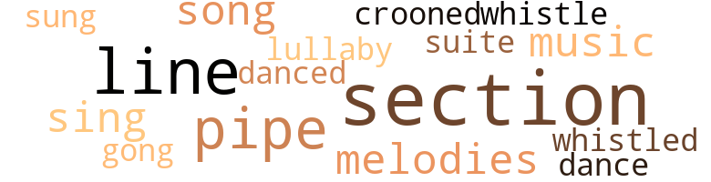
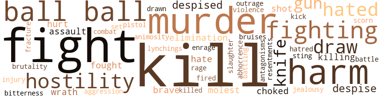

Pointing the Way, by Griggs, Sutton Elbert (1908)
33 music-related terms matched in this text.
Most frequent terms in this topic: section (7); line (5); pipe (4); sing (2); music (2)
croon.v.01
Definition: sing softly
| word | sentence |
|---|---|
| crooned | When he had regained sufficient control of his feelings to permit , Molair resumed the conversation , saying : " Yes , Mammy Lucy , that dear soul who in my infancy crooned above my cradle and rocked me to sleep with her lullaby songs ; who saw that my every boyish whim was gratified ; who washed and anointed my bruises and comforted my childish heart when , beaten and humiliated in a fight , I fled to the shelter of her apron ; who more than once , with her sympathetic nature , wooed disease from me and drew it upon herself - Mammy Lucy taught me in its fullness the lesson of human love , when , hearing of my illness , she came with her wan face and emaciated form , and took my life from the altar of death and in its stead sweetly laid thereon her own . |
dance.n.01
Definition: an artistic form of nonverbal communication
| word | sentence |
|---|---|
| dance | She could talk lak er poll paritt , walk ez proud ez er peacock , sing lak er markin ' bird an ' dance lak er buzz saw . |
dance.v.03
Definition: skip, leap, or move up and down or sideways
| word | sentence |
|---|---|
| danced | " Talk erbout dancin , ' yer Uncle Jack danced in er clean place ' long erbout den . |
gong.n.01
Definition: a percussion instrument consisting of a metal plate that is struck with a softheaded drumstick
| word | sentence |
|---|---|
| gong | The people of the city , wherever they chanced to be , paused to count the strokes of the gong , that they might , with the aid of the signal , consult their charts and thus locate the fire . |
lullaby.n.01
Definition: a quiet song intended to lull a child to sleep
| word | sentence |
|---|---|
| lullaby | When he had regained sufficient control of his feelings to permit , Molair resumed the conversation , saying : " Yes , Mammy Lucy , that dear soul who in my infancy crooned above my cradle and rocked me to sleep with her lullaby songs ; who saw that my every boyish whim was gratified ; who washed and anointed my bruises and comforted my childish heart when , beaten and humiliated in a fight , I fled to the shelter of her apron ; who more than once , with her sympathetic nature , wooed disease from me and drew it upon herself - Mammy Lucy taught me in its fullness the lesson of human love , when , hearing of my illness , she came with her wan face and emaciated form , and took my life from the altar of death and in its stead sweetly laid thereon her own . |
music.n.01
Definition: an artistic form of auditory communication incorporating instrumental or vocal tones in a structured and continuous manner
| word | sentence |
|---|---|
| music | Their ears had become attuned to the music or the noises of another world . |
| music | Time passed away , Conroe and Clotille were graduated from college , the former entering a medical school , while the latter went to Boston to perfect herself in music . |
pipe.n.04
Definition: a tubular wind instrument
| word | sentence |
|---|---|
| pipe | " Ton my soul ef it ai n't old Jack Morris , " said an aged woman , sitting near the fire blazing in the open fireplace , who had adjusted her spectacles and lifted her pipe from her mouth in order that she might the better survey the new-comer . |
| pipe | Put that in your pipe , great sir , and smoke it ! |
| pipe | In keeping with this purpose , one afternoon when Uncle Jack 's work was done and he was sitting in a chair in the back yard , under the shade of a tree , with his legs crossed and a pipe in his mouth , Eina drew near , dragging a chair with her . |
| pipe | Uncle Jack arose , lowered his head respectfully to one side and said with humility , " Miss Eina , I ai n't as ellerquent wid dis pipe ez I would be ef I had er chaw uv terbacky . |
section.n.01
Definition: a self-contained part of a larger composition (written or musical)
| word | sentence |
|---|---|
| section | When his evening 's work was done , Uncle Jack , with Eina 's permission , drove into Belrose and halted his horse at the door of one of the nicest of the houses situated in a section of the city largely owned by the colored people . |
| section | It is only a matter of a few years before the nation will again pick its Presidents from our section , and if such men as you are put forward as candidates you will find no happier , more enthusiastic supporters than will be the colored people . |
| section | Indulgence leads to decay , not to advancement , " said Molair , his whole attitude signifying abhorrence of the notion of coddling any section of the white race . |
| section | In cases where there has been absolutely no cause to fear the Negro a hue and cry of Negro domination has often been raised by men in your section . |
| section | Our poor , struggling section , with the most complicated problem of all of human history must have culture , must have culture . " |
| section | An hour or so before the time for the polls to close , Uncle Jack , who had taken up his residence in that State and section , came sauntering up to the door of the small store-room in which the election was being held . |
| section | My family believed the institution wrong and harmful in the large , but felt that the South could better work out the problem of getting rid of the institution alone rather than in connection with another section lacking the sympathetic consideration that flows from immediate touch with a problem , " responded Molair . |
sing.v.02
Definition: produce tones with the voice
| word | sentence |
|---|---|
| sung | Religious fervor ran high , the old plantation melodies were sung with zest , and a high degree of emotion was generated . |
| sing | When this task was over , Uncle Jack said : " Miss Eina , ef yer doan ' keer I 'll sing er hime an ' hab er prarr wid yer fo ' we goes ter our restin ' places . " |
| sing | She could talk lak er poll paritt , walk ez proud ez er peacock , sing lak er markin ' bird an ' dance lak er buzz saw . |
song.n.01
Definition: a short musical composition with words
| word | sentence |
|---|---|
| songs | When he had regained sufficient control of his feelings to permit , Molair resumed the conversation , saying : " Yes , Mammy Lucy , that dear soul who in my infancy crooned above my cradle and rocked me to sleep with her lullaby songs ; who saw that my every boyish whim was gratified ; who washed and anointed my bruises and comforted my childish heart when , beaten and humiliated in a fight , I fled to the shelter of her apron ; who more than once , with her sympathetic nature , wooed disease from me and drew it upon herself - Mammy Lucy taught me in its fullness the lesson of human love , when , hearing of my illness , she came with her wan face and emaciated form , and took my life from the altar of death and in its stead sweetly laid thereon her own . |
| song | " ' Dat song yer wuz singin ' wuz stirrin ' up air , ' said massa . |
suite.n.01
Definition: a musical composition of several movements only loosely connected
| word | sentence |
|---|---|
| suite | Seth Molair , the occupant of the suite of rooms , desiring to have an opportunity to study clients unobserved by them , so arranged the chairs in his waiting-room that this mirror recorded likenesses at such an angle that he could , by the use of a strong opera glass , constructed in the partition between the two offices , get a splendid view of people without their suspecting that he was observing them . |
tune.n.01
Definition: a succession of notes forming a distinctive sequence
| word | sentence |
|---|---|
| melodies | Religious fervor ran high , the old plantation melodies were sung with zest , and a high degree of emotion was generated . |
| line | As a sort of rest from the strain of trying to decide upon a line of procedure , Baug 's mind now reverted to his various talks with Eina , and there came back to him to both gladden and to further sadden his heart , Eina 's sunny smile , the glory of her eyes , the memory of the thrill of her low , sweet tones , the noble sentiments to which from time to time she had given voice . |
| line | With this line of procedure agreed upon , the two men sat throughout the night chatting , Baug listening with hungry ears to little scraps of remarks that Eina had from time to time let fall in Uncle Jack 's presence , remarks indicating that she took more than a passing interest in him . |
| line | What I have come to ask of you is along another line . |
| melodies | He was playing by the side of the babbling brooks , gathering daffodils from her fields , chasing lightning bugs in the gloaming , speeding over her country roads in buggies seated by the side of Dixie 's fair daughters , listening to the plantation melodies of the Negroes surging from their warm , emotional hearts . |
| line | In the days of slavery two Negro sisters , with the doings , more or less , of whose descendants we shall have to deal , were assigned diverse destinies , the one of them choosing a mate within the Negro race and becoming the maternal antecedent of a line of people of dark complexion , while the other became the maternal founder of a line of people of mixed blood . |
| line | In the days of slavery two Negro sisters , with the doings , more or less , of whose descendants we shall have to deal , were assigned diverse destinies , the one of them choosing a mate within the Negro race and becoming the maternal antecedent of a line of people of dark complexion , while the other became the maternal founder of a line of people of mixed blood . |
whistle.v.01
Definition: make whistling sounds
| word | sentence |
|---|---|
| whistled | Ole Joe had spies out whut whistled er long ways off ter let him know dat massa wuz cornin ' . |
| whistle | The whistle blew , the signals were called , and Conroe received the ball . |
135 violence-related terms matched in this text.
Most frequent terms in this topic: kill (14); fight (13); ball (10); murder (8); harm (7)
abhorrence.n.01
Definition: hate coupled with disgust
| word | sentence |
|---|---|
| abhorrence | Indulgence leads to decay , not to advancement , " said Molair , his whole attitude signifying abhorrence of the notion of coddling any section of the white race . |
aggression.n.01
Definition: a disposition to behave aggressively
| word | sentence |
|---|---|
| aggression | It pains me to have so acted at any time or place as to have impressed any one that Clotille 's interests needed protection from my aggression , " said Eina , rising and moving toward Miss Letitia in her eagerness to catch her every word . |
animosity.n.01
Definition: a feeling of ill will arousing active hostility
| word | sentence |
|---|---|
| animosity | In those days there sprang up an animosity between the sleek , well-fed Negro slave and the poor whites who accused the Negroes of keeping them poor by working for nothing . |
battle.v.01
Definition: battle or contend against in or as if in a battle
| word | sentence |
|---|---|
| combat | The firemen went gallantly to work to combat the flames , but the fire continued to make rapid headway . |
| battle | But no relief was there , for the sun seemed to say , " I , too , must battle for my life . " |
| battling | Here then was to be a battle royal within the colored race , Eina of the light complexion battling against Miss Letitia of the light complexion , the two taking opposite views with regard to the destinies of two dark persons . |
bruise.n.01
Definition: an injury that doesn't break the skin but results in some discoloration
| word | sentence |
|---|---|
| bruises | When he had regained sufficient control of his feelings to permit , Molair resumed the conversation , saying : " Yes , Mammy Lucy , that dear soul who in my infancy crooned above my cradle and rocked me to sleep with her lullaby songs ; who saw that my every boyish whim was gratified ; who washed and anointed my bruises and comforted my childish heart when , beaten and humiliated in a fight , I fled to the shelter of her apron ; who more than once , with her sympathetic nature , wooed disease from me and drew it upon herself - Mammy Lucy taught me in its fullness the lesson of human love , when , hearing of my illness , she came with her wan face and emaciated form , and took my life from the altar of death and in its stead sweetly laid thereon her own . |
contemn.v.01
Definition: look down on with disdain
| word | sentence |
|---|---|
| scorn | I scorn the idea of a weak test for a white man and a severe one for the Negro . |
| despised | As for Conroe , she despised him utterly . |
| despised | And I want every drop of the despised blood sucked into her veins . |
| despised | " Now our hope is to free the South from that man whose chief stock in trade is hatred of a weak and despised class . |
| despise | Clotille lifted her eyes to Baug 's face and said : " If anyone had told me two days ago that I could despise money , I would have denied it . |
| despise | But today I despise it ! |
| despise | I despise it with all my heart . |
draw.v.23
Definition: pull (a person) apart with four horses tied to his extremities, so as to execute him
| word | sentence |
|---|---|
| draw | " Well , sir , this prejudice is actually operating to draw into the white race more Negro blood than would dream of getting there without its aid . |
| drawn | Having felt assured that Clotille would marry in a manner to please her , Miss Letitia had drawn up her will , leaving her fortune to her , but she now resolved upon changing all this , and proceeded at once to Seth Molair 's office for the purpose of having him draw up another will . |
| draw | Having felt assured that Clotille would marry in a manner to please her , Miss Letitia had drawn up her will , leaving her fortune to her , but she now resolved upon changing all this , and proceeded at once to Seth Molair 's office for the purpose of having him draw up another will . |
| draw | Reaching for his telephone Molair called up the more prominent members of the Belrose bar and asked them as an act of professional courtesy to him to refuse to draw up a will for one Letitia Gilbreath , colored , who might call upon them for such service . |
| draw | For out of this inflamed mass we have to draw policemen , constables , sheriffs , legislators and juries . |
elimination.n.05
Definition: the murder of a competitor
| word | sentence |
|---|---|
| elimination | IN a corner of the part of the Belrose depot designated for the use of colored patrons , Uncle Jack and Baug sat awaiting the coming of the train that was to bear the former to the state of Alabama for the purpose of inaugurating a test of the clause of the recently adopted state constitution that provided for the elimination of the illiterate Negro voter without affecting to the same degree the illiterate white voter . |
| elimination | " The elimination of Baug and the providing of a healthy local atmosphere for the diseased mind of Cousin Letitia is my problem , then , " reasoned Clotille . |
enrage.v.01
Definition: put into a rage; make violently angry
| word | sentence |
|---|---|
| enrage | Further and further out reached the tongues of fire , their failure to reach the Rudolf seeming to enrage them , and each effort appeared to be more strenuous than its predecessor . |
ferociousness.n.01
Definition: the trait of extreme cruelty
| word | sentence |
|---|---|
| brutality | The eternal ages would not suffice to rid us of the accumulated strain of brutality that would be necessary for the wanton slaughter of ten millions of largely law-abiding and inoffensive people . " |
fight.n.02
Definition: the act of fighting; any contest or struggle
| word | sentence |
|---|---|
| fighting | Eina gazed at the cloud through which the sun was feebly shooting his failing rays , then looked at a heavier cloud hovering immediately beneath the fighting , dying king of day , ready to engulf him when his reign was over . |
fight.n.05
Definition: a boxing or wrestling match
| word | sentence |
|---|---|
| fight | When he had regained sufficient control of his feelings to permit , Molair resumed the conversation , saying : " Yes , Mammy Lucy , that dear soul who in my infancy crooned above my cradle and rocked me to sleep with her lullaby songs ; who saw that my every boyish whim was gratified ; who washed and anointed my bruises and comforted my childish heart when , beaten and humiliated in a fight , I fled to the shelter of her apron ; who more than once , with her sympathetic nature , wooed disease from me and drew it upon herself - Mammy Lucy taught me in its fullness the lesson of human love , when , hearing of my illness , she came with her wan face and emaciated form , and took my life from the altar of death and in its stead sweetly laid thereon her own . |
| fights | Drunkenness , fights as the result of jealousy , petty thefts and vagrancy were the charges as a rule lodged against the accused . |
| fight | So whenever a fight came up , just for the sake of my country , I always sacrificed my keen desire to fight and ran so as to preserve my knowledge for the benefit of the country . |
| fight | I got ter work wid him , got ter go ter law wid him , an ' sometimes got ter sass an ' ter fight wid him , perhaps . |
| fight | If my son with a thousand years of civilization behind him can not stand up in an equal fight with the great-grandson of a heathen and a savage , if he must be pampered and coddled with special laws , then I say with all my soul let him go to the wall . ' " |
| fight | Secon ' , 'cause his goin ' kep ' me frum goin ' ter fight ergin him . |
| fight | Evah botty ' roun ' dem plantations knowed dat I wuz skeert uv snakes , dead er erlive , an ' she had kilt dat snake an ' kep ' him jes ' fur me atter she seed de fight wuz cornin ' . |
| fight | De udder feller squared hisself an ' we wuz ready fur de fight w ' en de gal said , ' Laws a mussy , Mistah Jack , yer been layin ' down somewhar an ' er big snake done crawled up in yer pockit . ' |
fight.v.02
Definition: fight against or resist strongly
| word | sentence |
|---|---|
| fight | So whenever a fight came up , just for the sake of my country , I always sacrificed my keen desire to fight and ran so as to preserve my knowledge for the benefit of the country . |
| fight | Though bitterly opposed to the use of bicycles on the part of women , Miss Letitia bought one and learned to ride , so that she might be able to follow up fires and see the colored firemen fight the flames . |
| fighting | When at last Miss Letitia did see the colored firemen actually fighting the flames , her enthusiasm knew no bounds , and Clotille felt that at last the pessimism with which her cousin was afflicted now had a chance to pass away . |
| fought | Because you have fought with such bitterness my marrying a dark man , he has used Baug 's name in his correspondence so that a discovery of his letters on your part would not give us trouble . |
| fight | I have a great battle to fight - and win . |
| fight | With great zest he entered upon the task of raising the funds necessary to fight through the test case to be inaugurated by Uncle Jack according to secret plans laid out by Eina . |
| fight | " The only way to save the Rudolf is to mount its walls and fight the flames from the roof , but that is a great risk , " thought Conroe . |
| fighting | Such were the exclamations arising from Miss Letitia , as , with hat thrown back on her head , her face wearing a rapt expression , she gazed upon the three men fighting the flames . |
| fighting | The men on the wall of the Rudolf did not comprehend the meaning of the shout , so kept on fighting the flames . |
| fight | I must fight out life 's great battle alone , " said Eina , leaving the porch and entering her parlor . |
| fighting | We do n't draw the line on Spaniards or a brave , fighting people like the Indians . |
| fighting | When the Civil War was going on , why did you colored people stay in the fields and feed the armies that were fighting to keep you in slavery ? " asked Eina . |
| fought | His thorough knowledge of conditions in the South , the visits of Seth Molair and his mother , Eina 's letter to Clotille , together with that sad , anxious look which Eina was wearing on her face fully assured Uncle Jack as to the great battle that was being fought out in Eina 's mind . |
fracture.n.01
Definition: breaking of hard tissue such as bone
| word | sentence |
|---|---|
| fracture | Medical aid had been summoned as soon as Birmingham was reached , but an examination of the fracture of Uncle Jack 's skull caused by the fall revealed the fact that he had but a short while to live . |
fury.n.01
Definition: a feeling of intense anger
| word | sentence |
|---|---|
| rage | IF the marriage of Clotille and Conroe could have been postponed until Baug was disposed of , and until the conception had been fully developed in Miss Letitia 's mind that the harmonious relations between the races in Belrose were to continue , it might have been that the wedding would not have so excited the wrath of Miss Letitia ; but as it was , her rage was boundless . |
gag.v.06
Definition: cause to retch or choke
| word | sentence |
|---|---|
| choked | Wal , sah , I could ' uve choked dat kid fur cornin ' tell he wuz blue , fur he had et wid us erfore an ' he alius called fur er duck leg , w ' en we had duck . |
| choked | Shuah , miss , I tell yer I could ' uve choked dat chap almos ' ter def . |
gun.n.01
Definition: a weapon that discharges a missile at high velocity (especially from a metal tube or barrel)
| word | sentence |
|---|---|
| guns | The Negro men do not molest the white men , for the Negroes are deterred by the mob and by State authorities with machine guns . |
| gun | The guard who had been watching for this moment , lifted his gun and fired , wounding Charlie in the back . |
| gun | " One day w ' en de war wuz ' bout at its wust , I wuz goin ' through de woods wid er gun an ' two bird dogs . |
hate.n.01
Definition: the emotion of intense dislike; a feeling of dislike so strong that it demands action
| word | sentence |
|---|---|
| hatred | " Now our hope is to free the South from that man whose chief stock in trade is hatred of a weak and despised class . |
hate.v.01
Definition: dislike intensely; feel antipathy or aversion towards
| word | sentence |
|---|---|
| hated | Do this , and through the white man , the weak Negro woman and the tendency of the race to so marry as to lighten its hue , we will eventually be rid of the hated color , black . |
| hated | I hated to run , but as I said , I sacrificed my feelings for my country . " |
| hates | I want her to eat up the race she hates . |
| hate | Thus taught , the less spiritual among you have perhaps grown to hate your submerged fellows . " |
| hated | My massa had been kin ' ter me , so I hated ter see him leave . |
| hated | I hated ter do whut I am goin ' ter tell yer erbout , but I had ter . |
hostility.n.01
Definition: a hostile (very unfriendly) disposition
| word | sentence |
|---|---|
| hostility | Its professed tone was one of hostility to the Negro race , but he did not believe that a person with the sense to write the letter could really favor the policy of cruelty suggested . |
| hostility | In view of the long record of hostility to the Negro voters on the part of the " organization , " no hope was entertained of having large numbers of them to suddenly change and come to its rescue , so money was furnished to an element of whites that manned the party under whose name the bulk of the colored people usually voted , to the end that a ticket bearing the old name might be brought out to withhold Negro support from Molair . |
| hostility | " Now , as to how much my people , the Southern white people , have contributed to this degeneracy by tolerating things that smacked of hostility to your race , I have not come this morning to argue . |
| hostility | In some sections they have aroused a hostility far more intense than anything we have in the South . |
| hostility | If you can honorably do so , make terms with him in the South and word will come northward that will break up this solid mass of hostility to the South , " said Rogan . |
hostility.n.02
Definition: a state of deep-seated ill-will
| word | sentence |
|---|---|
| antagonisms | With the possibility of racial antagonisms on the one hand and social commingling on the other always confronting us , we are more or less in a chronic state of spiritual war , and , just as in time of war you do not allow the individual soldiers personal liberty , we withhold a great measure of personal liberty from all Southern people , white and colored , and maintain certain well-defined customs . " |
indignation.n.01
Definition: a feeling of righteous anger
| word | sentence |
|---|---|
| outrage | There is where the outrage comes in . |
injury.n.01
Definition: any physical damage to the body caused by violence or accident or fracture etc.
| word | sentence |
|---|---|
| harm | " But here wuz de wustest harm dat wuz done by de Ku Kluxes . |
| harm | And I knew that the harm you were doing Clotille was being done because you did not understand just what was taking place . " |
| injury | " Indeed , you speak the truth when you say that I am in ignorance concerning any form of injury that I am doing Clotille . |
| harm | In great detail Molair now went into the Southern situation and cited move after move , the insincerity of which was subsequently demonstrated , but which was in the public eye long enough to do great harm to the South and the Negro . |
| harm | All I have to say to you , Uncle Jack , is that I love you as dearly as I ever could have loved a father had I known one , and I want no harm to come to you . |
| harm | Wid him leavin ' I could n't go , caus ' harm might er come ter my missus an ' her two dorters . |
| harm | Ez er boy , I notussed dat dare war n't nevah no harm in er white man ef you could jes ' git him ter laf right good ' an hard . |
| harm | So I jes ' said ' taint no harm ter say , ' Glory ter God ! ' |
jealousy.n.01
Definition: a feeling of jealous envy (especially of a rival)
| word | sentence |
|---|---|
| jealousy | Drunkenness , fights as the result of jealousy , petty thefts and vagrancy were the charges as a rule lodged against the accused . |
kick_back.v.02
Definition: spring back, as from a forceful thrust
| word | sentence |
|---|---|
| kick | " Hah , hah , hah ; dat 's ' bout whut forty years uv servin ' hez brung our people frum de pie counter man ; er kick out , " said Uncle Jack . |
kill.v.10
Definition: cause the death of, without intention
| word | sentence |
|---|---|
| kill | Why , the thoughts of it are enough to kill poor Seth . |
| kill | I 'd wring his neck till he - he - well , I would n't kill him . |
| killed | You see I knew that the Yankees needed spies in the South , and that is why I put on dresses during the war , and there were things that I knew , that nobody else knew , and if I had got killed , what would have become of my knowledge ? |
| kill | " ' Naw , naw , massa ; Granny White says dat ef de air straks dis baby gal er mine it 'll shuah kill it , shuah kill it , massa , shuah kill it . |
| kill | " ' Naw , naw , massa ; Granny White says dat ef de air straks dis baby gal er mine it 'll shuah kill it , shuah kill it , massa , shuah kill it . |
| kill | " ' Naw , naw , massa ; Granny White says dat ef de air straks dis baby gal er mine it 'll shuah kill it , shuah kill it , massa , shuah kill it . |
| kill | " ' Now , massa , Granny White pintedly says dat jes ' one breaf uv air will kill de pore thing . |
| kill | I been kinder feered ter breathe fur fear er gust uv breaf mout reach de leetul one an ' kill it , ' said Joe , makin ' out he wuz ' bout ter cry and pattin ' de pig right sof ' an ' tender lak an ' tryin ' ter look ez ef his heart wuz erbout ter break . |
| kill | Ef yer jes ' will kill my baby by lookin ' at it , an ' lettin ' de air strak it , an ' I jes ' kaint ' suade yer ter not lif ' de kiver frum it , I ai n't got de heart ter stan ' by ter see it die . |
| kill | Borrowing from our Southern code on such matters , this boy went to the home of the white man , drew a pistol , spoke his mind very freely , but did not kill . |
| kill | " Ole massa lak ter laf fit ter kill hisself , an ' ole Majah Dinkins jes ' stood up an ' hollered . |
| kill | I led him ter de corner uv de house an ' said , ' Peep er ' round an ' see massa ' bout ter kill missus , an ' w ' en he hez done done dat he is goin ' ter come an ' kill yer . |
| kill | I led him ter de corner uv de house an ' said , ' Peep er ' round an ' see massa ' bout ter kill missus , an ' w ' en he hez done done dat he is goin ' ter come an ' kill yer . |
| kill | " ' Whut he wanter kill me fur ? ' |
| kill | How Conroe craved a blow that would kill ! |
killing.n.02
Definition: the act of terminating a life
| word | sentence |
|---|---|
| killing | Brutal assaults , and murder , wanton , wanton , wanton murder of man after man has been committed and yet not even a reprimand has ever been given to those who have done the killing , though witnesses of character , white and colored , have endeavored to bring the accused to trial . " |
| killing | Now that political and philanthropic forces gave promise of turning their faces in the right direction so far as the South was concerned , Molair returned to Belrose feeling assured that the outlook was bright for the killing of the destructive germs to be found in minds on the order of that of Miss Letitia . |
knife.n.02
Definition: a weapon with a handle and blade with a sharp point
| word | sentence |
|---|---|
| knife | Enraged at the thought of a Negro daring to criticise his conduct , he drew a pocket knife , opened it and rushed toward Charlie . |
| knife | She foun ' ole massa an ' took him way out in de back yard ter de grin ' stone ter grin ' de carvin ' knife . |
| knife | De preacher looked er roun ' an ' saw massa run-nin ' an ' de knife gleamin ' in de air . |
lynching.n.01
Definition: putting a person to death by mob action without due process of law
| word | sentence |
|---|---|
| lynchings | Sheriffs sometimes connive at lynchings . |
molest.v.01
Definition: harass or assault sexually; make indecent advances to
| word | sentence |
|---|---|
| molest | The Negro men do not molest the white men , for the Negroes are deterred by the mob and by State authorities with machine guns . |
| molest | Sherman Elliott 's shot and the fact that there was not the slightest effort to molest him decided Molair 's course , and he crossed the Rubicon . |
murder.n.01
Definition: unlawful premeditated killing of a human being by a human being
| word | sentence |
|---|---|
| murder | " All de murder sperrited men , de cutthroats an ' de scounuls wuz happy , fur dey could now git in dare wuk . |
| murder | " We ca n't murder them . |
| murder | This young fellow was in jail charged with having committed a murder , but his solemn protestations of innocence somehow impressed Molair . |
| murder | Police often murder wantonly . |
| murder | Brutal assaults , and murder , wanton , wanton , wanton murder of man after man has been committed and yet not even a reprimand has ever been given to those who have done the killing , though witnesses of character , white and colored , have endeavored to bring the accused to trial . " |
| murder | Brutal assaults , and murder , wanton , wanton , wanton murder of man after man has been committed and yet not even a reprimand has ever been given to those who have done the killing , though witnesses of character , white and colored , have endeavored to bring the accused to trial . " |
| murder | Yer ' minds me uv - " " Uncle Jack , I 'll murder you on the spot - no , I love you too much for that , but I will say I will never forgive you if you try to joke me now , " said Baug , tramping around impatiently , his eye roving about the doors and windows of Eina 's home , hoping to catch a glimpse of her . |
| murder | Thus the spirit of protection , which in the white man is buttressed by the courts , is in the Negro confronted with the scowl of murder on the face of the mob . |
musket_ball.n.01
Definition: a solid projectile that is shot by a musket
| word | sentence |
|---|---|
| ball | The ball was put into play , and it was soon seen that the two teams were about evenly matched . |
| ball | When called upon to carry the ball it was a thrilling sight to all save Clotille to see the manner in which he ploughed along , with the opposition in its entirety clinging to him . |
| ball | When the ball was in the enemy 's hands , like a steam engine he broke through all opposition and tackled the one carrying the ball , only to be heavily piled upon himself by the opposition team . |
| ball | When the ball was in the enemy 's hands , like a steam engine he broke through all opposition and tackled the one carrying the ball , only to be heavily piled upon himself by the opposition team . |
| ball | Conroe 's team was nearing the goal line of the opposition and the ball was given to him for a plunge . |
| ball | A dash , a crush , a falling down , the ball carried forward to the danger line , and Conroe lay gasping upon the ground . |
| ball | The captain had his doubts about Conroe 's ability to handle the ball at this crisis owing to the manner in which he had been battered . |
| ball | " See that I get that ball , " was the message that Conroe flashed to the captain . |
| ball | The whistle blew , the signals were called , and Conroe received the ball . |
| ball | Slowly , doggedly , with grim determination , Conroe , backed by his resolute team , continued to push his way until , across the goal line , he fell to the ground , clutching the ball as with hooks of steel . |
open_fire.v.01
Definition: start firing a weapon
| word | sentence |
|---|---|
| fired | The guard who had been watching for this moment , lifted his gun and fired , wounding Charlie in the back . |
pain.v.02
Definition: cause emotional anguish or make miserable
| word | sentence |
|---|---|
| hurt | Thinking that turning him over might perhaps hurt him , the men followed his request and allowed him to lie with his face downward , while they telephoned for an ambulance . |
| hurt | In fact , it might not hurt you , Uncle Jack , to always work at the place where the waitress works , for evidently she is a good judge of desirable places , " said Baug . |
pistol.n.01
Definition: a firearm that is held and fired with one hand
| word | sentence |
|---|---|
| pistol | Borrowing from our Southern code on such matters , this boy went to the home of the white man , drew a pistol , spoke his mind very freely , but did not kill . |
rape.n.03
Definition: the crime of forcing a woman to submit to sexual intercourse against her will
| word | sentence |
|---|---|
| assaults | Brutal assaults , and murder , wanton , wanton , wanton murder of man after man has been committed and yet not even a reprimand has ever been given to those who have done the killing , though witnesses of character , white and colored , have endeavored to bring the accused to trial . " |
| assault | The team whose goal line was now threatened saw no opportunity to score against Conroe 's team , but with grim determination they awaited this final assault , resolved to use every atom of force in their beings to prevent the score . |
resentment.n.01
Definition: a feeling of deep and bitter anger and ill-will
| word | sentence |
|---|---|
| bitterness | Because you have fought with such bitterness my marrying a dark man , he has used Baug 's name in his correspondence so that a discovery of his letters on your part would not give us trouble . |
| resentments | RECOGNIZING the fact that the outside world , whether the South so willed or not , could by needlessly stirring up resentments within its borders , materially affect that wholesome atmosphere which he was now desirous of creating , Molair decided to accept an urgent invitation to a private interview which had been extended to him a short while back by the President of the United States , who had heard of the Belrose movement . |
shoot.v.02
Definition: kill by firing a missile
| word | sentence |
|---|---|
| shot | Dey shot in my house an ' kilt my two-year-ole boy , an ' my one-year-old leetul gal , an ' shot my ole ' oman through de head . " |
| shot | " Dey shot me , too , an ' took me out ter beat me an ' hang me , " continued Uncle Jack . |
sic.v.01
Definition: urge to attack someone
| word | sentence |
|---|---|
| set | At first it was thought that Uncle Jack was jesting , but it was finally seen that he was in earnest , and plans were set on foot to humor him in all his requests . |
slaughter.n.03
Definition: the savage and excessive killing of many people
| word | sentence |
|---|---|
| slaughter | The eternal ages would not suffice to rid us of the accumulated strain of brutality that would be necessary for the wanton slaughter of ten millions of largely law-abiding and inoffensive people . " |
sting.n.03
Definition: a painful wound caused by the thrust of an insect's stinger into skin
| word | sentence |
|---|---|
| sting | De elluphunt pertecks hisself wid his snoot , de dog makes his gitby wid his teef , de bee makes yer ' speck hisself wid er sting , an ' de cullud man hez been takin ' keer uv hisself wid er joke , at leas ' dats de way I got er long mos ' ly . " |
violence.n.01
Definition: an act of aggression (as one against a person who resists)
| word | sentence |
|---|---|
| violence | It is true that the pressing of this case will in all likelihood bring me once more under the same roof with Eina under circumstances that will permit my speaking to her without inviting mob violence , but beyond that , what we are doing is in keeping with a vital need of the hour . |
weather.v.01
Definition: face and withstand with courage
| word | sentence |
|---|---|
| brave | I 'll not let these brave fellows die , " said Miss Letitia , springing up the ladder with the agility of a lad . |
| brave | " Are not colored men brave ? |
wrath.n.01
Definition: intense anger (usually on an epic scale)
| word | sentence |
|---|---|
| wrath | At this point Molair 's wrath had begun to mount and his eye had sought the end of the letter , desiring to know the name of the author who , having discarded emigration and annihilation , Molair felt must be on the eve of boldly suggesting amalgamation . |
| wrath | IF the marriage of Clotille and Conroe could have been postponed until Baug was disposed of , and until the conception had been fully developed in Miss Letitia 's mind that the harmonious relations between the races in Belrose were to continue , it might have been that the wedding would not have so excited the wrath of Miss Letitia ; but as it was , her rage was boundless . |
76 religion-related terms matched in this text.
Most frequent terms in this topic: God (13); preacher (10); heaven (9); church (6); faith (4)
baptize.v.01
Definition: administer baptism to
| word | sentence |
|---|---|
| baptized | The glorious history of Spain has baptized her slight swarthiness , and we forget the Moor . |
church.n.02
Definition: a place for public (especially Christian) worship
| word | sentence |
|---|---|
| church | The funeral was duly announced , and on the appointed day the people , white and colored , dropped their tasks and met at the Negro church , where both the white and Negro pastors delivered eulogies concerning the white-haired Uncle Jack , who sat with bowed head in a corner of a front seat . |
| church | When Uncle Jack had returned to Aunt Melissa 's from the church , she said : " Now , Jack Morris , yer air ' bout ter go back ter Belrose , an ' I would n't lak ter die thinkin ' dat Jack had turnt ter er fool . |
| churches | As a colored man I never attend their churches , theatres , or social gatherings , nor they ours . |
| church | Thus one morning as the ministers of the colored churches of Belrose were in the midst of their weekly meeting in one of their church edifices , Molair unexpectedly put in his appearance . |
| church | " I broke right straight fur de church whar de people wuz all getherin ' . |
| church | Some uv de sisterin ' in dey joy tried ter meet and ketch me , but I kep ' cornin ' tell I got plum in dat church an ' fell on de floor . |
church.n.04
Definition: the body of people who attend or belong to a particular local church
| word | sentence |
|---|---|
| churches | Thus one morning as the ministers of the colored churches of Belrose were in the midst of their weekly meeting in one of their church edifices , Molair unexpectedly put in his appearance . |
| church | My missus wuz at church dat day by herself , an ' she thort dat her husban ' would lak dis heah preacher caus ' he kinder preacht his docterin ' an ' would er done more ef he had got more amens an ' lesser frowns . |
| churches | " Yer see , Miss Eina , in slav ' ry times de cullud folks had ter set up in de galluries at de white churches , an ' frum dat fack an ' frum bein ' slaves dey kinder thort dat God had er kinder secon ' han ' intruss in dare gittin ' ' ligion . |
curate.n.01
Definition: a person authorized to conduct religious worship
| word | sentence |
|---|---|
| pastors | The funeral was duly announced , and on the appointed day the people , white and colored , dropped their tasks and met at the Negro church , where both the white and Negro pastors delivered eulogies concerning the white-haired Uncle Jack , who sat with bowed head in a corner of a front seat . |
divine.v.01
Definition: perceive intuitively or through some inexplicable perceptive powers
| word | sentence |
|---|---|
| divined | Molair had divined that Miss Letitia was of that class of colored people of an aristocratic turn of mind , whose sympathies were with the more aristocratic element of whites , and he felt assured that she would not call upon the Negro attorneys nor the more humble white lawyers for service , but upon the white lawyers of eminence , locally . |
| divining | Clotille , divining what was now to happen , was only too glad to hurry away so that she might no longer be in Baug and Eina 's way . |
| divined | UNCLE Jack was by no means a fool , and soon divined that Eina had some deep purpose in having him talk . |
| divined | As Conroe was a noble , handsome fellow Eina divined at once that the trouble was not to be found in him but somewhere in things external to him . |
doctrine.n.01
Definition: a belief (or system of beliefs) accepted as authoritative by some group or school
| word | sentence |
|---|---|
| doctrine | " That doctrine has had its effect , " spoke up one . |
eden.n.01
Definition: any place of complete bliss and delight and peace
| word | sentence |
|---|---|
| heaven | There is a far more appropriate be that could be said by a less devout man that would better fit this occasion - no , no , that thought is wicked , and 1 need heaven 's help right now , " said Baug . |
| heaven | " If things are bright now , I hope to heaven to never , never see them dark , " said Baug . |
| heaven | Conroe not daring to hope that the sun had come to shine in his door , took it for granted that it was Baug who was to be thus favored of heaven . |
| heavens | The clouds to vex her reign were thin and few , and even they , in passing beneath her throne , were tinged with glory and made resplendent in the heavens . |
| heaven | For heaven 's sake do n't make our race question a political football . |
| heaven | When Baug uttered his first words , this justice arose and in a voice quaking with fear , said : " For good and sufficient cause , and in the name of high heaven , I move the adjournment of this court for a few moments , to decide in private a momentous question of procedure . " |
| heaven | But in the time of his enforced separation from Eina he had vowed before his maker that he would not return to this intermediate state , this sort of purgatory , but would at once make a straight dash for the heaven of his happiness , the securing of an acknowledgement from Eina that she loved him and would become his wife . |
| heaven | " Oh , may it be that kind heaven has at last sent me a wife for my son , " was the inward prayer of Mrs. Molair . |
| heaven | " If all else fails , thank heaven , here is no Morganitic pitfall for Seth , unless mother nature who chiseled that girl 's brow is a miserable liar , " thought Mrs. Molair , as in her joy over the type she judged Eina to be she rushed to and kissed her . |
| heaven | I dislike to dwell upon unpleasant incidents in our life here in the South , and high heaven knows there are enough of them , but a girl standing on the border line , about to make choice of race , should know all . " |
god.n.03
Definition: a man of such superior qualities that he seems like a deity to other people
| word | sentence |
|---|---|
| God | Evah debbul kotched right hold uv de midnight plan , an ' ' fore God it wuz de baddis ' times dat evah been in de lan ' . |
| God | We would to God the whites had consented sooner to work with us and had not left us to the mercies of those who sacked the State government , escaped with the loot and left us with the odium . |
| God | " Yes , for God 's sake , go , and go quickly ! " |
| God | America has n't got enough of the grace of God in her heart to treat a black man as she would a white man . |
| God | If you want a man to stay colored , why in the name of God do n't you treat him right as colored ? |
| God | For God 's sake , do n't ! " shouted the throng , while one man put a restraining hand upon her shoulder . |
| God | In his prayer there was manifest the simple faith of a child , a belief in the miraculous power of God and his readiness to resort to the miraculous . |
| God | To Uncle Jack heaven was a reality , just over the way , and as he talked of it Eina could catch the gleam of the gold on the streets , hear the angel shouts and taste of the nectar flowing from the throne of God . |
| God | " Yer see , Miss Eina , in slav ' ry times de cullud folks had ter set up in de galluries at de white churches , an ' frum dat fack an ' frum bein ' slaves dey kinder thort dat God had er kinder secon ' han ' intruss in dare gittin ' ' ligion . |
| God | Dey felt kind uv humble lak ' an ' thort it took er whole lot ter git God ter look at ' um . |
| God | But ter save my life I could n't think ' bout God fur wonderin ' whut mought be movin ' ' round in de grabe yard nigh unter me . |
| God | While bofe eyes wuz still shet I ' grees wid myself right quick ter compermise wid my skeert feelin 's an ' keep one eye shet fur God 's sake an ' one eye open fur Jack 's sake . |
| God | But ef turnin ' yerself loose bodaciously an ' sperritually ovah ter de great God uv heben an ' losin ' whut yer want ter do in whut he wants done , den I mus ' say dat my ' ligion ' rived ter me later on w ' en I made er pint blank s ' render in my heart . " |
godhead.n.01
Definition: terms referring to the Judeo-Christian God
| word | sentence |
|---|---|
| divine | The milky way , like a diamond studded bridal veil , hovered near the moon as if to be in easy reach of this beautiful woman of the night traveling toward some consort divine . |
grace.n.05
Definition: (Greek mythology) one of three sisters who were the givers of beauty and charm; a favorite subject for sculptors
| word | sentence |
|---|---|
| Grace | Grace characterized the demeanor of the women , their attire being all that the most fastidious taste could exact , while the men , too , presented a splendid appearance . |
idol.n.01
Definition: a material effigy that is worshipped
| word | sentence |
|---|---|
| idol | " Describe her to me , Seth , " said Mrs. Molair , laying aside a book which she had been reading , and looking approvingly at the idol of her heart . |
moor.n.01
Definition: one of the Muslim people of north Africa; of mixed Arab and Berber descent; converted to Islam in the 8th century; conqueror of Spain in the 8th century
| word | sentence |
|---|---|
| Moors | Of course you know that the Spaniards drew the dark in their complexion from the Moors , who of course are Africans . |
| Moor | The glorious history of Spain has baptized her slight swarthiness , and we forget the Moor . |
| Moors | " The Spaniards got their tinge of the dark through the Moors , they say , and the Moors are Africans , " replied Eina . |
| Moors | " The Spaniards got their tinge of the dark through the Moors , they say , and the Moors are Africans , " replied Eina . |
praise.n.02
Definition: offering words of homage as an act of worship
| word | sentence |
|---|---|
| praise | " So we have two men , each being the finest that ever lived , " said Eina laughingly , in thorough sympathy with Mrs. Molair 's praise of her husband and son . |
prayer.n.01
Definition: the act of communicating with a deity (especially as a petition or in adoration or contrition or thanksgiving)
| word | sentence |
|---|---|
| prayer | " Oh , may it be that kind heaven has at last sent me a wife for my son , " was the inward prayer of Mrs. Molair . |
| prayer | In his prayer there was manifest the simple faith of a child , a belief in the miraculous power of God and his readiness to resort to the miraculous . |
prayer.n.04
Definition: a fixed text used in praying
| word | sentence |
|---|---|
| prayer | With this prayer upon his lips , Conroe made the plunge . |
preacher.n.01
Definition: someone whose occupation is preaching the gospel
| word | sentence |
|---|---|
| preachers | My ole massa didu n't b ' lieve much in preachers . |
| preachers | " He tried ter git de preachers ter preach ergin ' slav ' ry , but somehow he could n't get ' um ter tech it . |
| preacher | " Wal , ennyhow , my ole massa didu n't lak er preacher fur nuthin ' much , an ' didu n't go ter church . |
| preacher | One day er sorter ' vangelis ' preacher come through our way an ' in his sermont he kinder teched on slav ' ry , speakin ' ergin it . |
| preacher | My missus wuz at church dat day by herself , an ' she thort dat her husban ' would lak dis heah preacher caus ' he kinder preacht his docterin ' an ' would er done more ef he had got more amens an ' lesser frowns . |
| preacher | " It wuz er warm day an ' ole missus had de preacher ter set out in de yard under er big oak . |
| preacher | Missus wanted er chance ter talk wid massa by hisself so she mout tell him dat dis preacher wuz ergin slav ' ry an ' he could erford ter treat him er leetul bettah dan wuz common ter him . |
| preacher | I runs out ter de preacher an ' says , ' Mistah , kaint yer help er pore fambly out ? |
| preachers | " ' He doan ' lak preachers an ' you done come home wid his wife , ' I says . |
| preacher | I tole him dat de preacher wuz so hungry dat he wuz feert dat he would n't git ernough eatin ' wid de ballunce an ' dat he took an ' stole de fattis ' chicken an ' run off wid it . |
| preacher | Den massa wuz mad shuah ' nough an ' he tole missus ter nevah bring er nuther preacher ter his house . |
| preacher | " Ez fur de chicken , I had et de remainder ez I tole you , an ' I had hid de ballunce ter make de tale on de preacher pan out all right . |
| preacher | " I let it stan ' dat way ter keep frum skander-lizin ' de meeting but I went off ter talk ter er white preacher , an ' from him I got de white folks quiut kind uv ' ligion . |
prophetess.n.01
Definition: a woman prophet
| word | sentence |
|---|---|
| prophetess | I am not a prophetess , nor the seventh daughter of a seventh daughter , but I venture the prediction that I shall furnish an explanation of this phenomenon , and that , upon discovery , it will excite more interest than it does as a mystery . |
religion.n.01
Definition: a strong belief in a supernatural power or powers that control human destiny
| word | sentence |
|---|---|
| faith | To begin with , there was a presumption in Molair 's mind in the man 's favor , for just as the Negroes had great faith in their white folks , the whites , as a rule , had great faith in their Negroes . |
| faith | To begin with , there was a presumption in Molair 's mind in the man 's favor , for just as the Negroes had great faith in their white folks , the whites , as a rule , had great faith in their Negroes . |
| faith | It is true that you now and then let down your bars so that a white man of a political faith other than that of your dominant party can enter and vote , but his connection with the other party forces him to come in quietly , so that you still miss that unfettered ferment of the whole Anglo-Saxon spirit , that grand , free play of all the forces of your racial soul that has in reality been the source of the political greatness of your race . |
| faith | In his prayer there was manifest the simple faith of a child , a belief in the miraculous power of God and his readiness to resort to the miraculous . |
| religion | The next morning at breakfast Eina said , " Uncle Jack , tell me how you professed religion , wo n't you ? " |
sacrifice.v.04
Definition: make a sacrifice of; in religious rituals
| word | sentence |
|---|---|
| sacrificed | So whenever a fight came up , just for the sake of my country , I always sacrificed my keen desire to fight and ran so as to preserve my knowledge for the benefit of the country . |
| sacrificed | I hated to run , but as I said , I sacrificed my feelings for my country . " |
saint.n.02
Definition: person of exceptional holiness
| word | sentence |
|---|---|
| angel | " Uncle Jack , you were once a slave , but you seem to be as serene as an angel now . |
| angel | To Uncle Jack heaven was a reality , just over the way , and as he talked of it Eina could catch the gleam of the gold on the streets , hear the angel shouts and taste of the nectar flowing from the throne of God . |
sermon.n.01
Definition: an address of a religious nature (usually delivered during a church service)
| word | sentence |
|---|---|
| discourse | Many a time had Baug in days gone by sought Uncle Jack in order that he might dispel feelings of gloom by drawing on his rich store of humorous experiences , but at this time he felt more like listening to a funeral discourse than to a joke . |
temple.n.03
Definition: an edifice devoted to special or exalted purposes
| word | sentence |
|---|---|
| temples | Having dispatched this note , Eina , in an aimless manner , wandered from room to room in her cottage , alternately wringing her hands and holding them to her throbbing temples . |
ull.n.01
Definition: (Norse mythology) one of the Aesir known for his beauty and skill with bow and skis; son of Sif and stepson of Thor
| word | sentence |
|---|---|
| ull | Er dog ' ull do dat . |